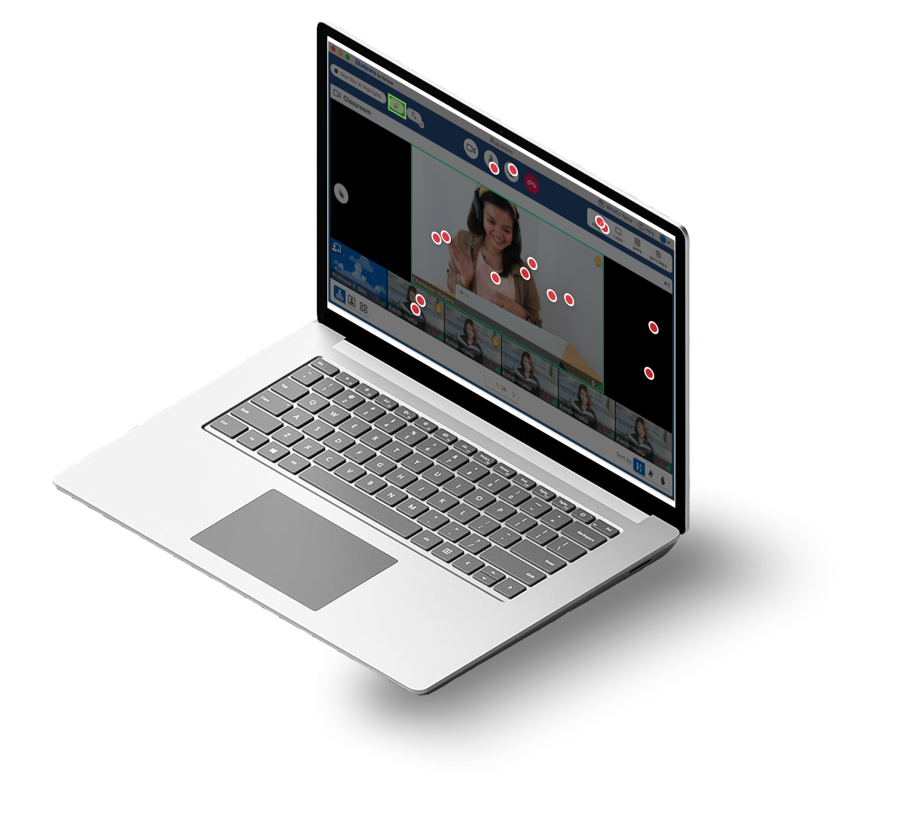
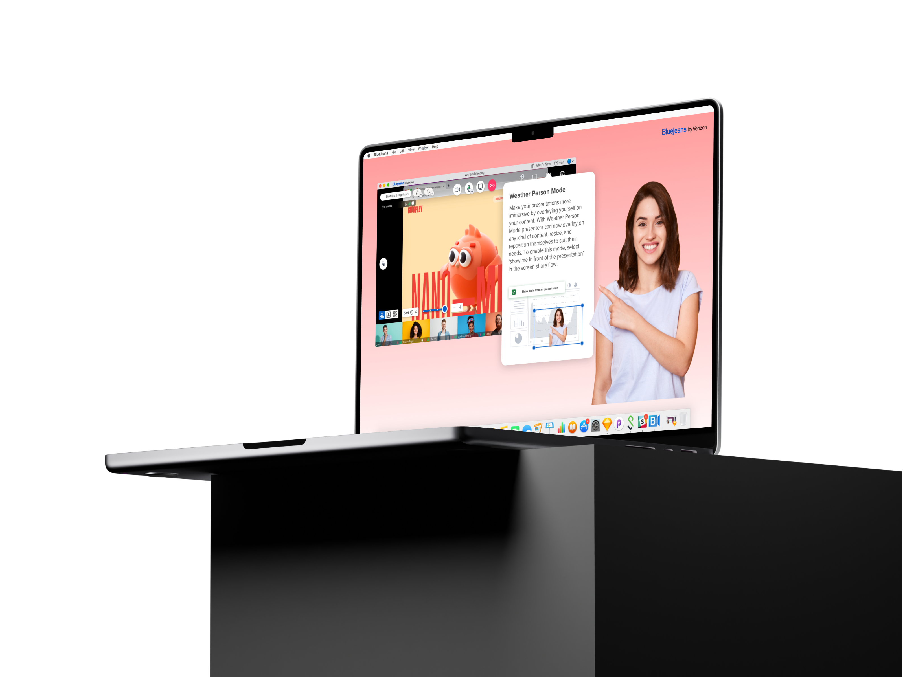

BlueJeans
by Verizon
Verizon · Enterprise · Cloud Video · 2020–2023
Design Lead for remote learning transformation. Designed the digital classroom experience adopted by Verizon Training, University of Michigan, and Wharton School of Pennsylvania.
Explore sectionPreferences redesign drove 12% increase in feature usage and 85% reduction in task completion time. Computer vision POCs and Meta partnership expanded the platform's capabilities.
Explore section900+ components built with atomic design principles. Set a 29-second page design record. Became the foundation for Verizon's design system migration and cut feature development time by 85%.
Explore sectionHow design supported remote learning transformation, digital classroom systems, and human connection at scale, in the middle of a global pandemic.
As Design Lead for the Remote Learning product, I helped redefine what a virtual classroom could be when physical classrooms were no longer an option. The challenge was not building another video conferencing product. It was designing an environment capable of supporting the complexity of real learning. Teaching, communication, participation, classroom management, and human connection all needed to coexist within a single experience.
Technology kept people connected during the pandemic. Design determined whether those interactions felt transactional or genuinely human.
Adopted by organizations including Verizon Training, the University of Michigan, and the Wharton School, the platform served educators, students, and enterprise learners during a period when digital communication became a critical part of everyday life. Its success across diverse learning environments demonstrated that the experience could support far more than video conferencing, accommodating the complexity of real classrooms, training programs, and collaborative learning at scale.
After experimenting with different solutions, BlueJeans was by far superior to other tools.
On a daily basis, BlueJeans affects our culture. It lets us incorporate the world into our classroom. That's the direction we're moving as a global business school.
If we were to look at another product... I have a hard time believing their customer support could do the things BlueJeans does. To me, that puts BlueJeans above the rest.

During the pandemic, traditional in-person research became impossible. User testing shifted entirely online through platforms including usabilityhub and usertesting.com.
Through extensive A/B testing, heat map analysis, event tracking, and expert interviews, we continuously refined the product around real classroom behavior rather than assumptions.
Educators across multiple grade levels participated in cognitive walkthroughs, helping validate whether the platform addressed the realities of teaching, engagement, and classroom management in a remote environment.
The insights were behavioral, not cosmetic. They changed what we built, not just how we built it.
Instructors managing a live classroom were operating at cognitive capacity. Every extra click was an error waiting to happen. Controls needed to be anticipatory, not reactive.
Students felt invisible in large classes. When they couldn't see themselves or gauge participation, engagement dropped. Presence signals mattered more than we expected.
Educators lost significant time moving between tools: slides, roster, chat, participant controls. Reducing context switching was the highest-leverage design intervention.
Technical failures during live sessions caused disproportionate loss of student trust. Stability and recovery behavior mattered more than any feature.
First-session setup consistently blocked instructors from focusing on teaching. The FTU experience needed to establish confidence, not just configure settings.
Classroom needs varied sharply between K-12, higher ed, and enterprise. A one-size UI failed all of them. Configurability wasn't optional, it was the product.
Rather than a feature list, the platform was organized around the real jobs an instructor and learner perform simultaneously.
Instructors needed authority over their classroom without constant micro-management. Attendance, muting, participant visibility, and focus controls had to feel natural, not surgical.
Passive video watching is not learning. The platform needed engagement mechanisms that felt organic, not gamified. Reactions, annotations, and live polling closed the loop between instructor and student.
No two classrooms behave the same. Content types, group sizes, and teaching styles all demand different configurations. The system needed to flex without requiring the instructor to redesign their workflow.
Communication in a classroom is layered: instructor to group, instructor to individual, student to student. The design made each channel accessible without interrupting the primary teaching flow.
The dashboard was the operational center of the classroom: attendance, content, communication, and participant management converging in one environment.


Designing the virtual classroom meant designing for constant adaptation. Every participant, teaching style, and classroom dynamic demanded flexibility, while technical infrastructure imposed strict limitations on layout behavior and rendering logic.
The challenge wasn't simply arranging windows. It was designing a system capable of balancing teaching, visibility, communication, and engagement simultaneously.
The rendering logic system had to be both intelligent and transparent: making decisions the instructor didn't have to think about, while remaining predictable enough to trust.



I led the development of "Weather Person Mode," allowing instructors to overlay themselves directly onto presentations without background interruption.
The feature transformed passive screen sharing into a more engaging and human teaching experience. The instructor remained physically present in the content, not replaced by it.
Designing this required close collaboration with engineering to understand the rendering constraints and build a system that felt seamless despite significant technical complexity beneath.


Multitasking optimization. Balancing teaching, participant management, and classroom communication simultaneously without overloading the primary teaching surface.


Core platform optimization, usability refinement, desktop experience modernization. From the education ecosystem to the meeting room, the product that most people used, every day.

Scalability, operational maturity, system architecture, engineering collaboration. The infrastructure that made every other section of this case study possible.
To support a rapidly evolving product ecosystem, I led the creation of an Atomic Design System in Figma, consisting of over 900 responsive components, reusable patterns, and production-ready templates. More than a UI library, the system became a shared language between design and engineering. It brought consistency across products, accelerated decision-making, reduced implementation friction, and created a scalable foundation for future growth. By transforming design from a collection of individual screens into a cohesive system, teams were able to move faster while maintaining a higher standard of quality.
The design system became a force multiplier across the organization.
The result was not simply faster execution, but a more scalable product development process capable of supporting long-term growth.
This wasn't just interface design. It was systems leadership during a moment when digital communication became essential to how people worked, learned, and connected.
Designing for context, constraints, and human behavior at automotive scale.